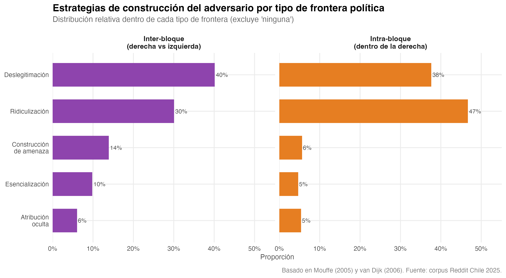
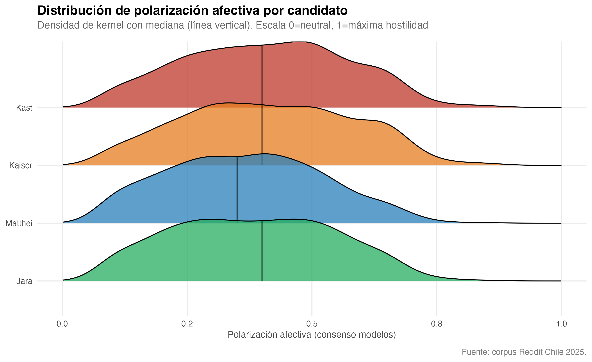
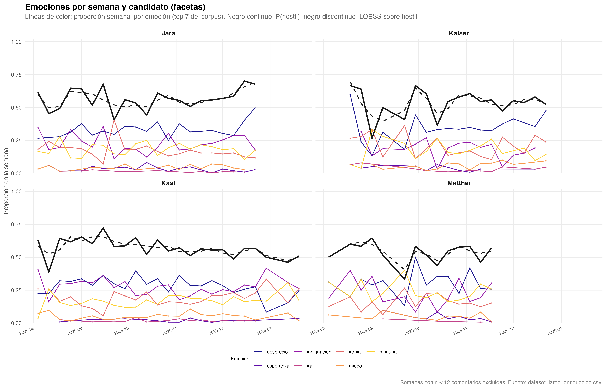
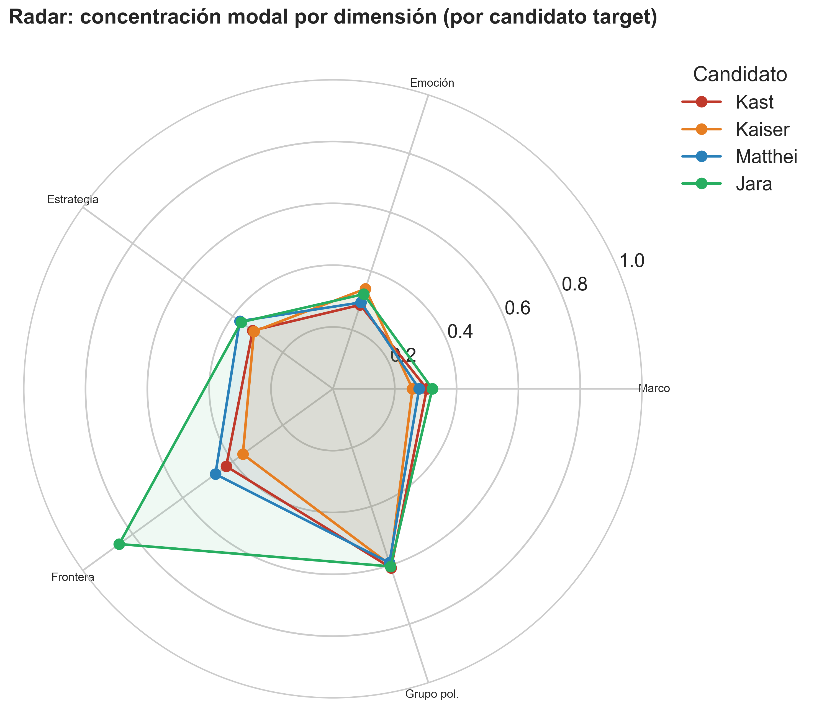
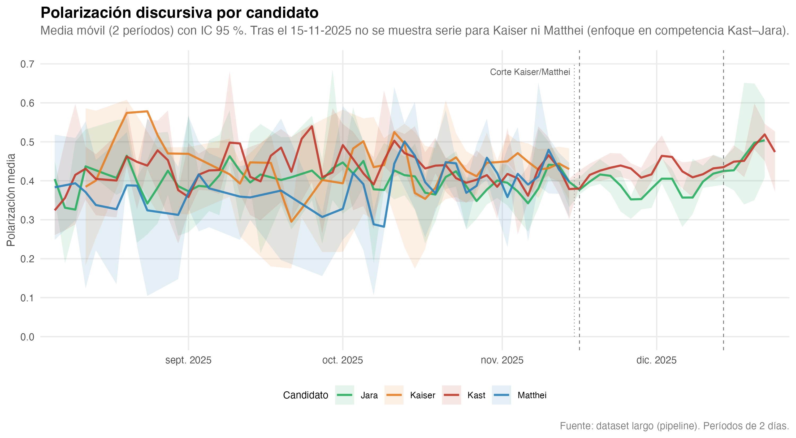
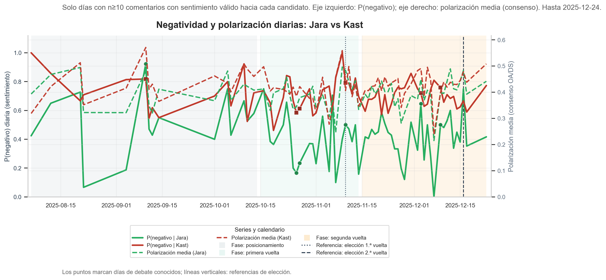

6 Exploración de Datos
Análisis textual longitudinal de la contestación discursiva en las elecciones presidenciales de 2025 en Chile
Este capítulo ofrece una vista exploratoria del corpus antes del modelado formal: volumen de comentarios por candidato, cruces entre estrategia discursiva y frontera política, densidad de la polarización, evolución semanal de emociones por candidato (panel acoplado con tendencia hostil), perfiles vía radar y series temporales de polarización.
6.1 Volumen de comentarios por candidato

6.2 Estrategia discursiva y frontera política
Relación exploratoria entre tipo de estrategia (eje horizontal) y frontera política (facetas), por candidato. Figura producida con scripts/analisis/03_visualizacion-modelado.R.

6.3 Densidad de polarización por candidato
Distribución de la polarización (consenso) condicionada al candidato comentado; visualización tipo densidad/ridges. Misma fuente R que la figura anterior.

6.4 Emociones en el tiempo (facetas por candidato)
La Figura 6.4 muestra, para cada candidato objetivo, la proporción semanal de las emociones más frecuentes en el corpus (líneas de color). La línea negra continua es la proporción de emociones hostiles (ira, desprecio, indignación); el trazo discontinuo es un suavizado LOESS sobre esa fracción hostil. Las semanas con menos de 12 comentarios se excluyen. Figura generada en R con scripts/analisis/viz_r_tesis.R (misma salida en outputs_ml/ y copias a fig_thesis/ e images/). CSV largo: outputs_ml/emociones_semanal_largo_por_candidato.csv.

6.5 Perfiles discursivos: radar por candidato
Cada eje del radar muestra la concentración de la categoría modal en esa dimensión (0–1), calculada sobre los comentarios cuyo target es ese candidato. El quinto eje es el grupo de polarización (baja / media / alta). La Figura 6.5 permite comparar a Kast, Kaiser, Matthei y Jara.

Figura generada con scripts/analisis/09_ml_avanzado.py (run_radar_por_candidato). Tabla: radar_concentracion_modal_candidatos.csv.
6.6 Polarización en el tiempo
La Figura 6.6 reproduce la serie bisegmentada (cada dos días) de polarización media por candidato, con la misma lógica de calendario que en el capítulo de modelado. El archivo de referencia del pipeline es outputs_ml/serie_polarizacion_candidatos.png (copia idéntica de serie_polarizacion_cada_2_dias_candidatos.png). Para el libro se usa la copia en images/ (compatible con GitHub Pages).

outputs_ml/serie_polarizacion_candidatos.png).

Fuentes: scripts/analisis/07_pipeline_completo.py, scripts/analisis/08_transiciones_sentimiento_derecha_jara.py, scripts/analisis/viz_r_tesis.R (polarización y emociones), scripts/analisis/09_ml_avanzado.py (radar).